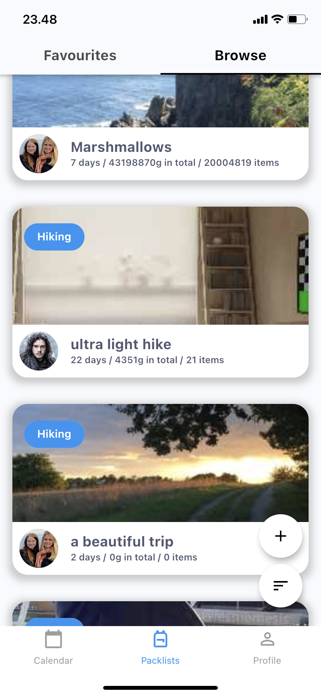
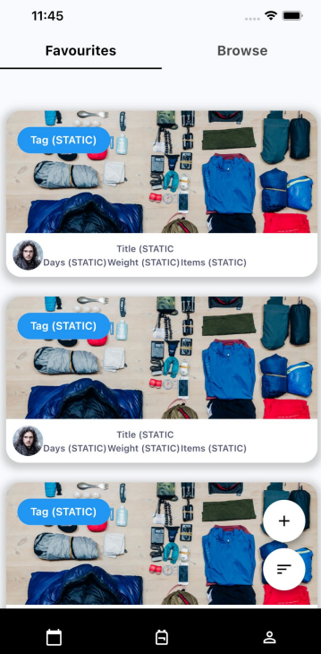
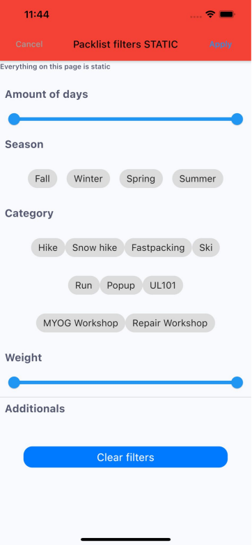
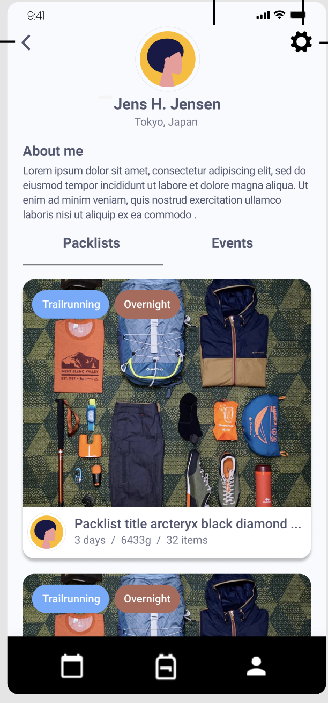
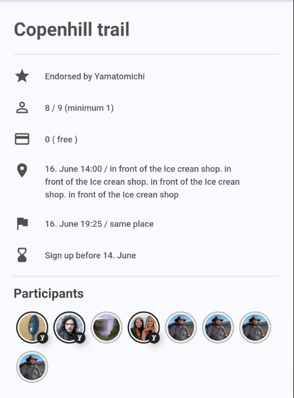

Hiker's App
@Yamatomichi & @ITU
During our second year project @ITU we collaborated with the Japanese hiking clothes company @Yamatomichi in developing a mobile app in Flutter
The app was a mismatch of Facebook Groups and Facebook Events. A user could create an hike even and send invitation out to other hikers on the app, or create an event everyone could sign up for. Several ways of filtering events was provided to the users, as well as a "create a pack list" to show people what they needed to bring
Flutter
Firebase
Large Teams
Remote Collaboration
Agile development
SCRUM




